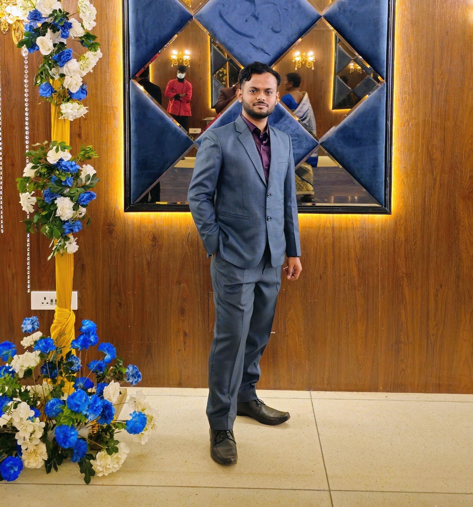

Sabyasachi Mitra
An AI enthusiast and Electronics and Computer Science Engineering graduate with a strong foundation in machine learning, deep learning, and data-driven problem-solving. I enjoy turning messy, real-world data and complex challenges into intelligent, practical applications.

My work sits right at the intersection of AI and software engineering—ranging from a breast cancer prediction system built with ResNet-18 and K-Means clustering, to a car rental demand forecasting pipeline and a real-time chat application powered by Flask-SocketIO. Along the way, I have built hands-on experience with Python, NumPy, Pandas, TensorFlow, and Scikit-learn, paired with Flask, SQLite, and web fundamentals to take models beyond notebooks into working apps.
Through internships at IIT Kharagpur and CodeClause, I have sharpened my ability to experiment, debug, and build solutions that hold up in practice. Whether I am training neural networks, exploring patterns in data, or wiring up backend logic, I like keeping things clean, thoughtful, and impact-focused.
I am always excited to learn new AI architectures and team up on ambitious ideas. Let's build something impactful together!